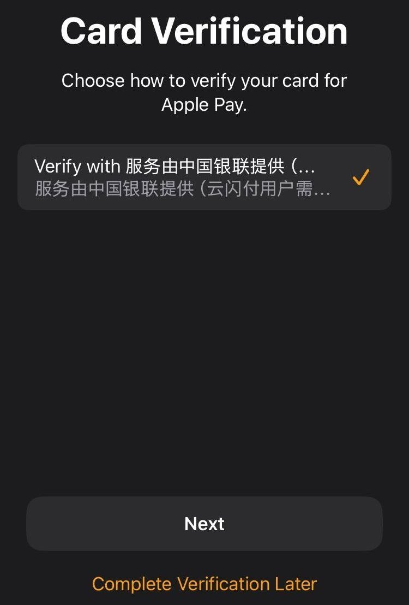
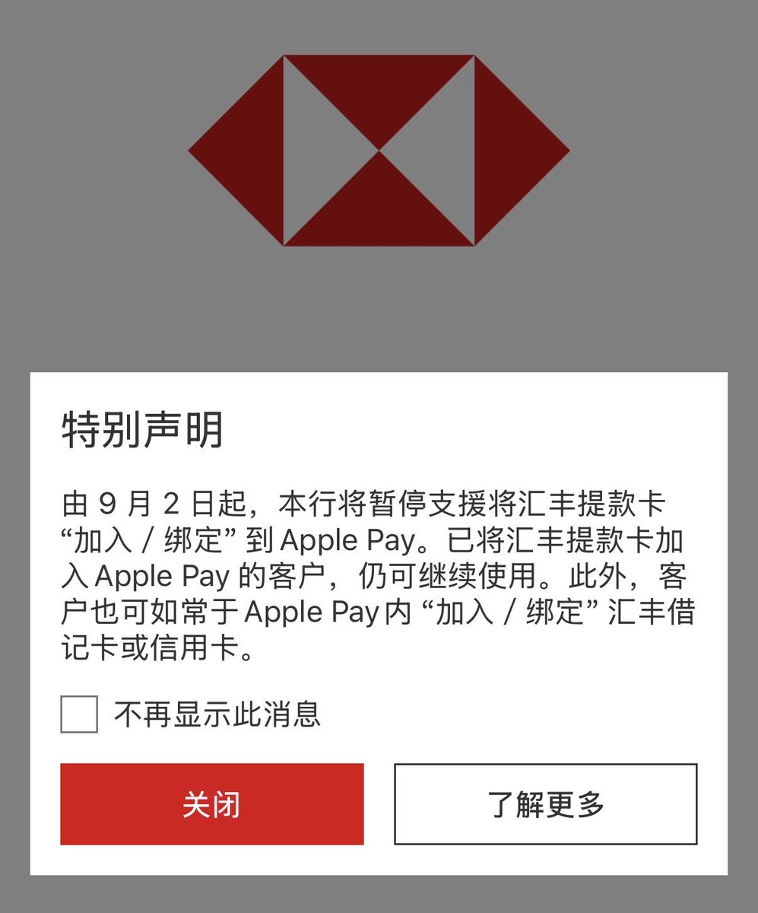
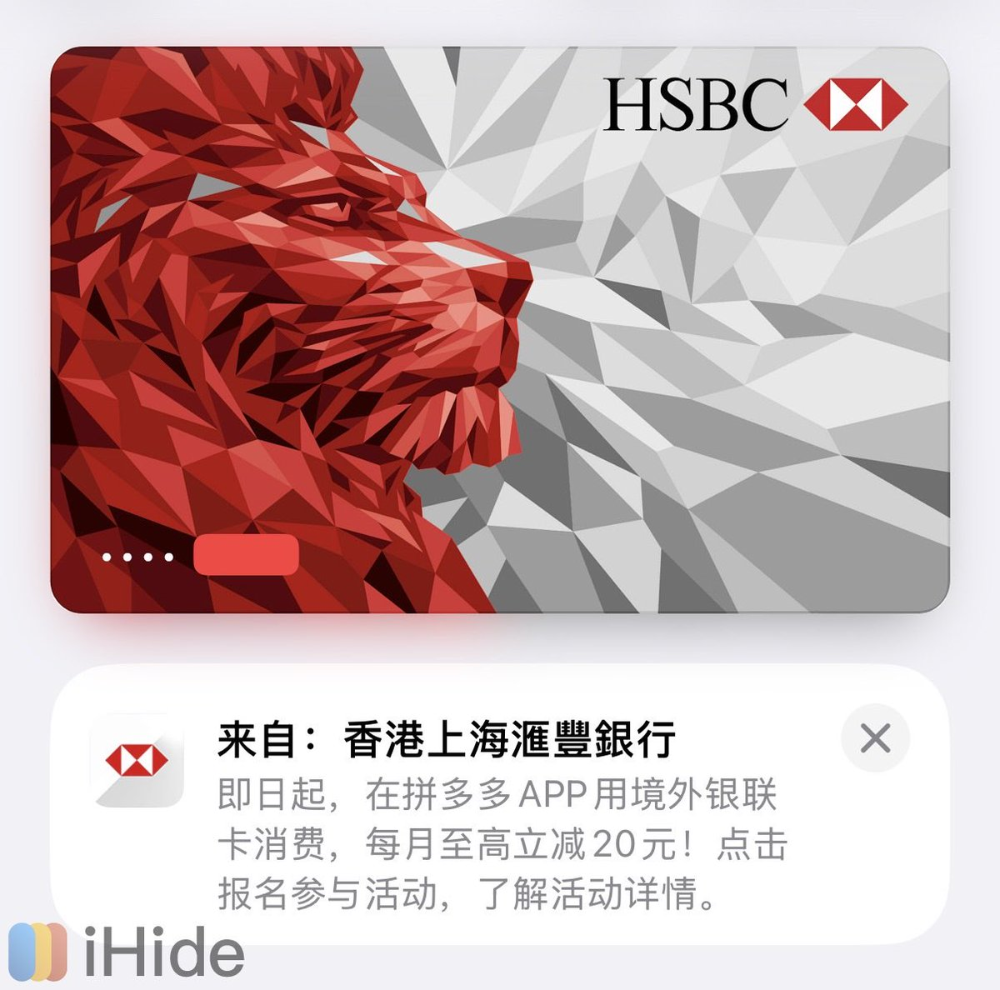

大概率是中国银联在推广新Apple Pay加卡验证流程，通过钱包 App 添加银联卡时，有较大概率触发银联新验证流程。或许HSBC HK（汇丰香港）是在接入该流程，不必恐慌因为不是终止而是暂停。
根据encmasuta频道的说法，「新流程」下通过钱包 App 加卡，验证方式将仅有唯一的「服务由中国银联提供（云闪付用户需更新至最新版本）」。选择该（唯一）选项将拉起本机银行 App 或云闪付，后续流程将由银行或银联决定，多数包含人脸识别等强实名手段。
部分银行可能另在 App 中提供管理和激活未激活设备卡功能。而另有部分银行虽可拉起 App，但并未完成新流程适配，无法正常激活设备卡。该部分银行现仅可通过银行 App / 云闪付发起添加卡片，才可成功添加并激活。
根据encmasuta频道的说法，「新流程」下通过钱包 App 加卡，验证方式将仅有唯一的「服务由中国银联提供（云闪付用户需更新至最新版本）」。选择该（唯一）选项将拉起本机银行 App 或云闪付，后续流程将由银行或银联决定，多数包含人脸识别等强实名手段。
部分银行可能另在 App 中提供管理和激活未激活设备卡功能。而另有部分银行虽可拉起 App，但并未完成新流程适配，无法正常激活设备卡。该部分银行现仅可通过银行 App / 云闪付发起添加卡片，才可成功添加并激活。


